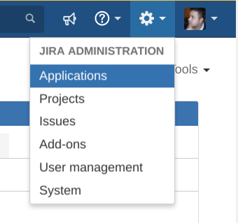
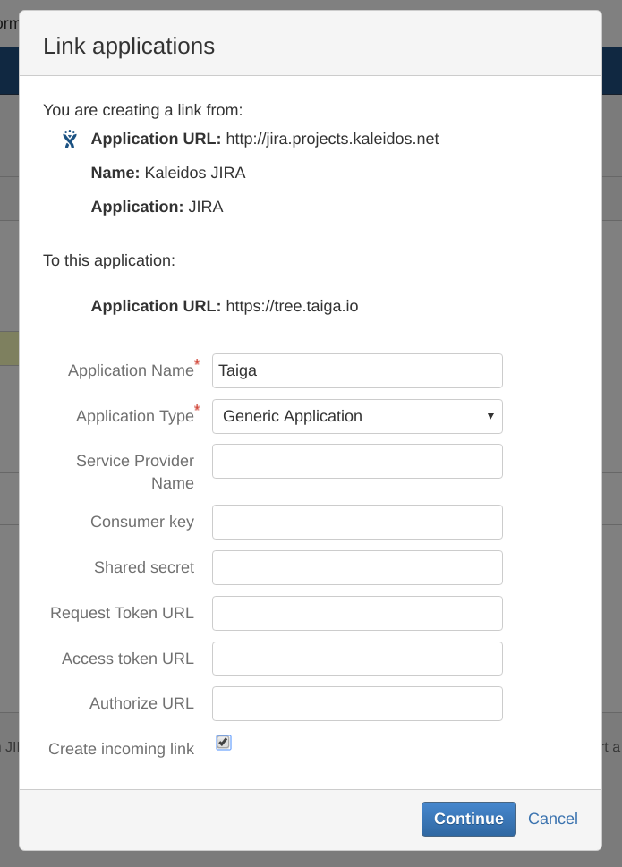
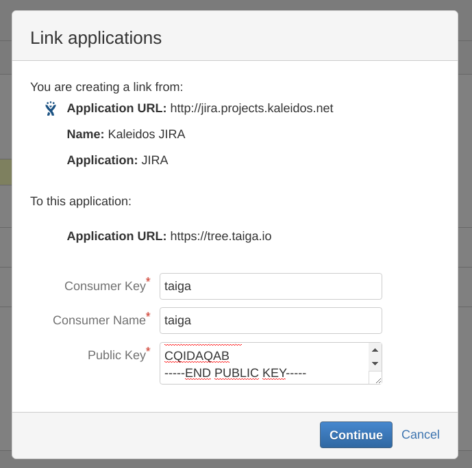
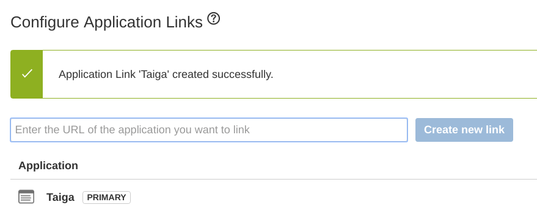
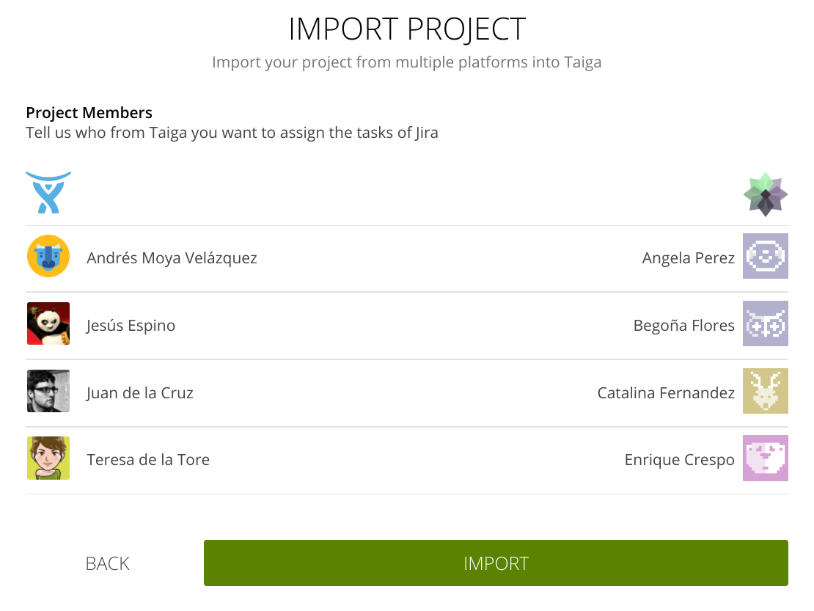
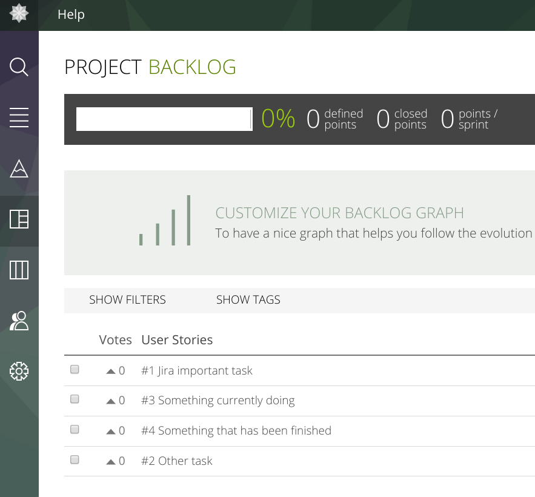

Jira importer
What I need to import from Jira?
You need to configure in your Jira the access from Taiga that allows you to give access with the rights of your users. To do this, you have to go to the applications settings in your Jira server.

Then, select "Application links" configuration.

And create a new application link that points to "https://tree.taiga.io" (or your taiga instance url).

You may be asked to confirm the url in some cases, you simply have to confirm the url.

Then, you have to create the new application link called "Taiga" as a "Generic Application" type, and check the "Create incomming link".

In the incomming link configuration, you have to set the consumer key to "taiga", the consumer name to "Taiga", and in the public key you have to copy and paste the text below:
-----BEGIN PUBLIC KEY----- MIIBIjANBgkqhkiG9w0BAQEFAAOCAQ8AMIIBCgKCAQEA6HMNth/OevwEmvUJb2wP TftjP2PBwiVqNGvrWnjypZHT6KixDd9av1NlG3ldQJDn7ZdZ0tJmZ/bfeUlV8LX2 QuL5StU6LAP1T3665HZTlzvfsfiC+52eIUi+eXWStZmQ7jhok4e6kIHgddKHSVgQ rZ/xL5eBOprmCoQ2YoScpSt7p2dPuB3TRht2paF0ppd+w8zKkghojPK0H9yZfEIT V/+H/bOllcf/1Qs42cUn4Im3bASoXy17fCtwF4IYGx2OAAy58T4GHnKuuqRukGdP HYs8qDBl4Nq6bJaUOy7zwRFxpR4WQqsAL0v/RR5Eu6N8std2NPeK4dgj/SYoVXVC zwIDAQAB -----END PUBLIC KEY-----

Finally, you get the confirmation of your "Application link" creation. Now you can import projects from this Jira instance.

How I import a project from Jira?
To start the importation project, you have to got to your project menu, and click on "Create Project" button.

After that, you can select how to create the project, in this case we want to "Import project".

You can select which importer do you want to use, in this case, you have to select the "Jira" importer and fill the URL field with your Jira URL and click accede.

As soon as you click accede, you will be redirected to the Jira authorization page, to allow Taiga to access to your projects (during the next day). You have to click "Allow", to continue the process.

Then you have to select which jira project want to import.

Once you have selected the project you have to define how you want to import the project. This include:
- The title of the project.
- The description of the project.
- If the project is public or private
- Which kind of project do you want to create (If you are not importing Jira Agile Board, in this case, is automatically detected).
If you want to keep a link from your taiga User Stories to the original jira issues.

Before finish the import process you have to match your Jira users with your Taiga users, this allow us to keep assignation, creation and comments author information correctly.

Finally, you only have to click "Import" button to start the import process, this can take a while, so be patient.

After the import process, you can access to your new created project that will looks like this.

Wich data is imported, and how?
- Jira Project or Jira Board as Taiga Scrum/Kanba/Issues Project.
- Statuses.
- Issues as User Story/Epics/Issues.
- Subtasks as User Story tasks or Epic User Stories.
- Jira Agile sprints as Taiga Sprints
- Jira members as Project members.
- Labels as tags.
- Due Date field as Taiga custom field "Due date".
- Priority field as Taiga custom field "Priority".
- Resolution field as Taiga custom field "Resolution".
- Resolution date field as Taiga custom field "Resolution date".
- Environment as Taiga custom field "Environment".
- Component field as Taiga custom field "Components".
- Affected versions field as Taiga custom field "Affected version/s".
- Fix versions field as Taiga custom field "Fix version/s".
- Links as Taiga custom field "Links".
- Custom fields.
- Comments.
- Attachments.
- Changes in title, description, attachments, labels, sprints, story points, custom fields and state.
- Issue assignations as User Story/Task/Issue assignation for the first, and User Story/Task/Issue watchers for the rest.